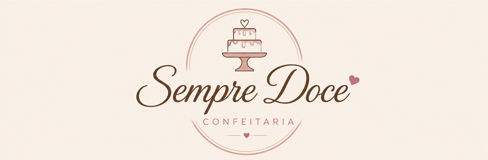
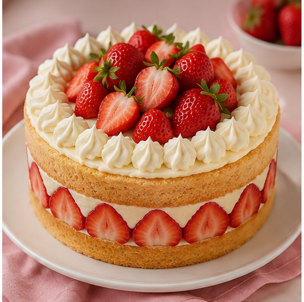

A Confeitaria Sempre Doce
é uma empresa especializada em criar experiências
doces e memoráveis para nossos clientes.
Com uma paixão pela confeitaria artesanal,
oferecemos uma variedade de bolos, doces e sobremesas
que são preparados com ingredientes de alta qualidade
e muito amor. Nosso objetivo é proporcionar momentos
de felicidade através de nossas criações, tornando cada celebração
ainda mais especial.